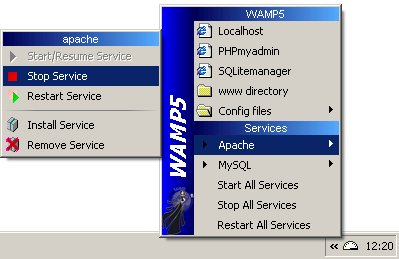
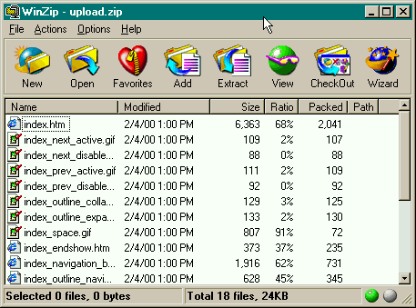
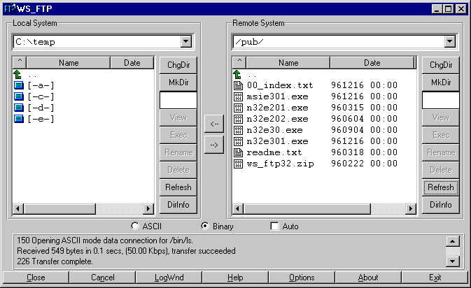
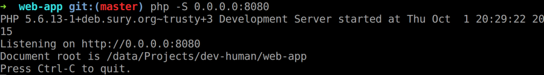
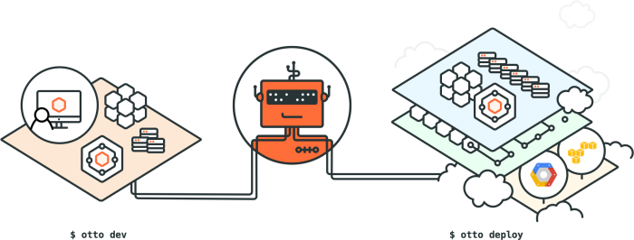
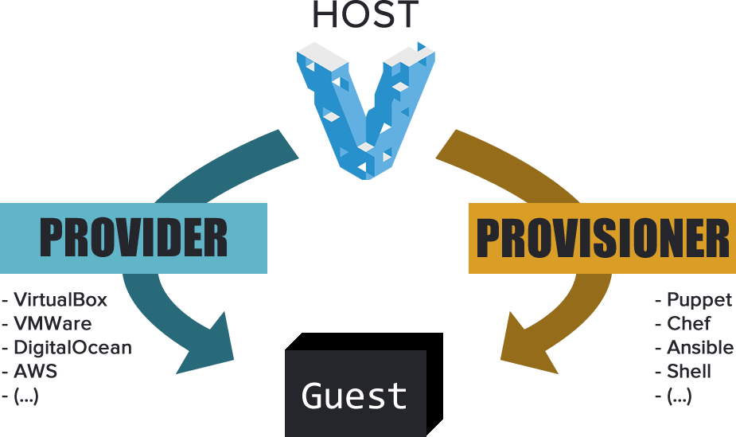
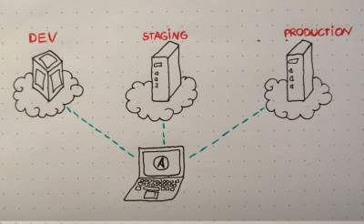
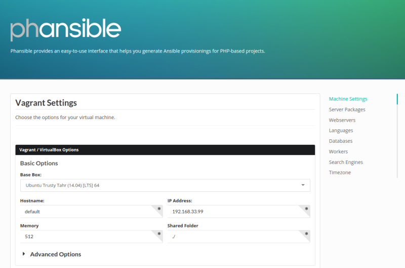

D.R.I.V.E.
with Vagrant and Ansible
A talk by @erikaheidi

Back in Time...
(PHP) Development Environments
Who never?
Linux: hackers only
Sharing the Project
Deployment
Hosting
Back to 2015
What a Time to Be Alive!
But, still...
"It works on my machine..."
What's the best way to make your development process more consistent and avoid the snowflake conundrum ?
D.R.I.V.E.
- Disposable
- Replicable
- Isolated
- Versioned
- Environment
Virtual Machines
- Disposable Machine
- Isolated Environment
- Tools:
- VirtualBox
- VMWare
- KVM
- Xen
Configuration Management
- Replicable Provisioning
- "Blueprint" of the Provisioning can be Versioned
- Tools:
- Ansible
- Puppet
- Chef
- Salt
Vagrant
- Clever Tool
- Virtual Machines + Configuration Management
- Easy DRIVE for DEV
- Made conf management popular w/ devs
- and we nailed it
Otto?
"Otto is very young and while we tout it as a successor to Vagrant, it'll take time to reach the maturity level that Vagrant is already at. We don't recommend dropping Vagrant today, but look to Otto for the future.."
How Vagrant Works
Closing the Gap
- Provisioning for DEV is ready. How hard it is
to customize for PROD? - Many won't take advantage due to the complexity
of the tool used
Ansible to the rescue!
- Simple language (YAML)
- Developer-friendly
- Agentless Architecture
- Great collection of built-in modules
Playbook Example
---
- hosts: all
sudo: true
tasks:
- name: Update apt-cache
apt: update_cache=yes
- name: Install Nginx
apt: pkg=nginx state=latest
Playbook Resources
- Variables
- Loops
- Conditionals
- Templates
- Ansible Vault
Using Vagrant with Ansible
#Vagrantfile
Vagrant.configure("2") do |config|
config.vm.box = "hashicorp/precise64"
config.vm.provision "ansible" do |ansible|
ansible.playbook = "playbook.yml"
end
end
$ vagrant up
Closing the Gap:
Multistage Environments

I'll share my process
1. Use Phansible as Boilerplate
1. Use Phansible as Boilerplate
.
├── ansible
│ ├── files
│ │ └── authorized_keys
│ ├── inventories
│ │ └── dev
│ ├── playbook.yml
│ ├── roles
│ │ ├── app
│ │ ├── mysql
│ │ ├── nginx
│ │ ├── php
│ │ ├── server
│ │ └── vagrant_local
│ ├── vars
│ │ └── all.yml
│ └── windows.sh
└── Vagrantfile
2. Organize the Inventories
#ansible/inventories/dev
[myapp-dev]
192.168.11.15
#ansible/inventories/prod
[myapp-prod]
128.199.38.37
.
├── ansible
│ ├── files
│ │ └── authorized_keys
│ ├── inventories
│ │ ├── dev
│ │ └── prod
│ ├── playbook.yml
│ ├── roles
│ │ ├── app
│ │ ├── mysql
│ │ ├── nginx
│ │ ├── php
│ │ ├── server
│ │ └── vagrant_local
│ ├── vars
│ │ └── all.yml
│ └── windows.sh
└── Vagrantfile
3. Configure Group Vars
- Variables can be defined in many ways
- Phansible uses an included var file - works fine for dev
- But... Group Vars are the recommended way to customize for multistaging
3. Configure Group Vars
ansible/group_vars/all.yml
project_root: /vagrant
sys_packages: ["git, vim, curl"]
doc_root: /vagrant/web
system_user: vagrant
system_group: vagrant
ansible/group_vars/myapp-dev.yml
project_root: /custom
doc_root: /custom/web
ansible/group_vars/myapp-prod.yml
project_root: /var/www
doc_root: /var/www/web
system_user: www-data
system_group: www-data
3. Configure Group Vars
$ mkdir ansible/group_vars
$ mv ansible/vars/all.yml ansible/group_vars/all.yml
Edit the Playbook: remove vars_files
---
- hosts: all
sudo: true
vars_files:
- vars/all.yml
roles:
- server
- vagrant_local
- nginx
- mysql
- php
- app
My Multistaging Summary:
- 1. Use Phansible as Boilerplate
- 2. Organize the Inventories
- 3. Configure Group Vars
- PROFIT
you can find detailed instructions here
Wait...

How do I use this?
Configuring server's SSH access
- Regular user with sudo permission (KEYPAIR auth)
- For convenience, give NOPASSWD permission to this user, so you won't need to provide the sudo password each time you run Ansible
details: check this tutorial
Test your Setup with Ansible
$ ansible all -i ansible/inventories/prod -m ping
128.199.38.37 | success >> {
"changed": false,
"ping": "pong"
}
Check the Playbook Tasks
This won't execute anything - it will just list the tasks
$ ansible-playbook -i ansible/inventories/prod ansible/playbook.yml --list-tasks
playbook: ansible/playbook.yml
play #1 (all): TAGS: []
Update apt TAGS: []
Install System Packages TAGS: []
Install Extra Packages TAGS: []
Configure the timezone TAGS: []
More Configure the timezone TAGS: []
Set default system language pack TAGS: []
Set the hostname in /etc/hostname TAGS: []
Set the hostname TAGS: []
Update /etc/hosts TAGS: []
Install Nginx TAGS: []
Change default nginx site TAGS: []
shell hostname TAGS: []
mysql | Install MySQL Packages TAGS: []
...
Run the Playbook
$ ansible-playbook -i ansible/inventories/prod ansible/playbook.yml
PLAY [all] ********************************************************************
GATHERING FACTS ***************************************************************
ok: [128.199.38.37]
TASK: [server | Update apt] ***************************************************
ok: [128.199.38.37]
TASK: [server | Install System Packages] **************************************
ok: [128.199.38.37] => (item=curl,wget,python-software-properties)
TASK: [server | Install Extra Packages] ***************************************
ok: [128.199.38.37] => (item=vim,git,fail2ban)
TASK: [server | Configure the timezone] ***************************************
ok: [128.199.38.37]
TASK: [server | More Configure the timezone] **********************************
ok: [128.199.38.37]
...
Do you Like Cows?
$ sudo apt-get cowsay
____________
< PLAY [all] >
------------
\ ^__^
\ (oo)\_______
(__)\ )\/\
||----w |
|| ||
_________________
< GATHERING FACTS >
-----------------
\ ^__^
\ (oo)\_______
(__)\ )\/\
||----w |
|| ||
ok: [128.199.38.37]
Goodies
25% discount on Leanpub
Use code sweetlake
leanpub.com/vagrantcookbook/c/sweetlake
Also on Amazon (paperback)
Thanks!
@erikaheidi | erika@do.co
http://slides.erikaheidi.com/DRIVE